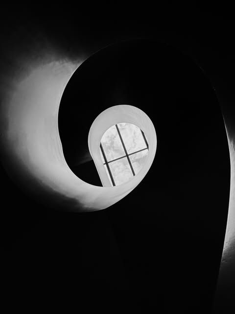

Fieldwork first
Gallery visits, atelier conversations, street encounters and direct observation.
An independent cultural platform
Domus Cultura is a Swiss platform for contemporary art, architecture, photography and sound—built around close looking, independent voices and encounters in real space.

01 / Position
Founded in Paris in 2011, Domus Cultura connects exhibitions, artists, streets, buildings, images and sound. The platform moves between an editorial journal, carefully produced editions and gatherings that create direct exchange.
We are interested in practices with a distinct point of view, and in making contemporary art legible without flattening its complexity.
02 / Editorial method
Every story begins with a work, a person or a place—never with empty volume.
Gallery visits, atelier conversations, street encounters and direct observation.
Practices are presented through process, place, references and lived experience.
Editorial selection remains separate from paid products, partnerships and advertising.
Stories can lead to editions, commissions, events and sustained collaborations.
03 / Resident practices
Architecture, public space and the quiet gestures through which people inhabit the world.
Selections and adaptable sets connecting club music, jazz, electronics and global references.
04 / What we stand behind
Domus Cultura’s editions and objects are not merchandise added after the fact. They extend the story through material, image and use. A product must earn its place through a physical sample, clear rights, an accurate description and a production route tested for the person receiving it.
Read our making standards ↗05 / Open call
Artists, photographers, writers, sound practitioners and independent cultural projects can submit work for consideration.
Read the criteria and submit ↗